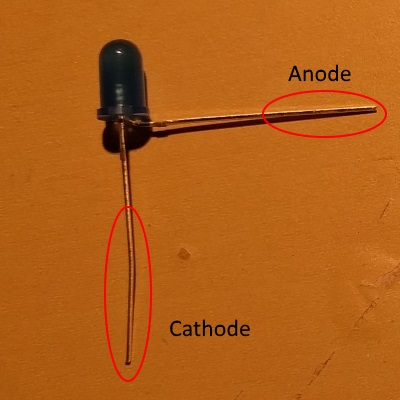
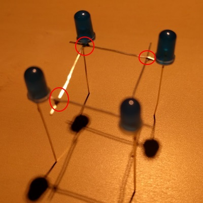
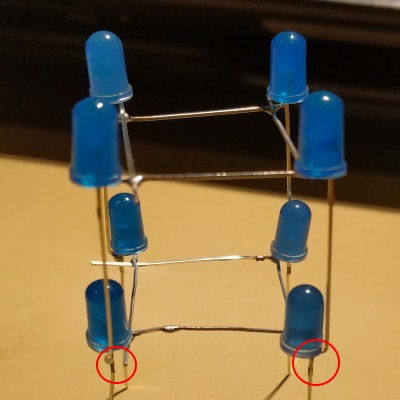
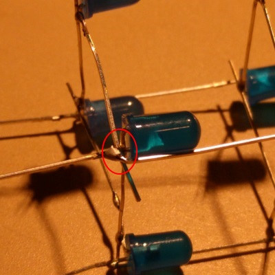
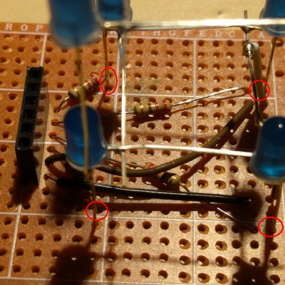
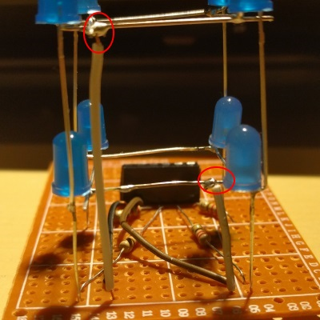
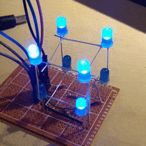

1. First bend all the LED's anode (the shoter leg) to the side.

2. Solder four of the anode legs together to form a square. And repeat for the other four LEDs.


3. Stack the two squares on top of each other and solder the cathode (the longer leg) together. A tip would be to bend the end of the top cathode legs a little bit to make it easier to solder to the bottom cathode legs.

4. Solder the four resistors on to the prototyping board and connect them to the cathode legs.

5. Use wires to connect the anode squares to the board.

6. Finished! Connect to a Arduino and start programming the LED cube!